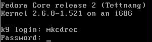
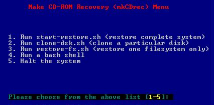

MkCDrec version 0.7.4 and higher is able to restore a mkCDrec backup to a user-mode Linux installation. Ron Yorston experimented with this and basically this was his cookbook:
# extract the initrd file from the boot floppy image on the CD
mount -t iso9660 /dev/cdrom /mnt/cdrom
cp /mnt/cdrom/bootflop.img /tmp
umount /mnt/cdrom
mount -o loop -t vfat /tmp/bootflop.img /mnt/spare
cp /mnt/spare/initrd.gz .
umount /mnt/spare
gunzip initrd.gz
# make a 20 Gb disk to restore to
dd if=/dev/zero of=mkcdrec_fs bs=1024k count=1 seek=20000
# start UML connected to the 20 Gb disk and the CD drive
linux initrd=initrd ubd0=mkcdrec_fs ubd1=/dev/cdrom fakehd fake_ide \
ubd=3 ramdisk_size=32768 mem=64M devfs=nomount
More on UML can be found on:
The Superrescue CD-ROM mode will copy the complete /usr from your source Linux system onto the CD-ROM.
Basically it is quiet easy to make a superrescue CD-ROM with mkCDrec on Intel architecture only. Just do the following:
# make –f Makefile.x86 superrescue
This way all commands from /usr/bin, /sbin will be available on the CD-ROM.
Once booted from a mkCDrec CD-ROM you will be logged on by default on the /dev/console (also known as Alt-F1). However, there exist a mkCDrec menu to make the life easier of end-users.
Therefore type the Alt-F5 key and login as user mkcdrec (with password mkCDrec):

You will now see the following menu:

The options are straightforward and need no further explanations.
OBDR can rapidly restore or replicate a server's operating system, software applications, and data using a tape cartridge(s). This is possible because the tape drive emulates a CD-ROM that allows the server to "boot from tape". This standard feature is embedded in the firmware of HP tape drives.
For more information go to http://www.hp.com/go/obdr
What does this mean? MkCDrec will create an ISO9660 image and put it on a tape instead of burning to a CD-R(W). The backups of the file systems are put after the ISO image. So basically, everything fits on one tape.
To boot from tape you need:
a HP tape drive which supports OBDR (see URL above)
a PC BIOS able to boot from SCSI (maybe it is needed to put SCSI on top of the list)
power-off the PC completely
push (while PC is off) on the eject button of the tape drive and switch on the PC. This will activate the OBDR mode and the tape drive will emulate a SCSI CD-ROM. You will notice that the green/orange led’s intermittent light up.On newer PCs the procedure may be different (F8 instead). See URL above.
PC loads the linux and initrd from the tape.
tape drive goes out of OBDR mode and become a plain tape drive again.
the rd-base.img is read from tape.
Linux system is up and running. Restore is possible, see chapter 4.
Simple! How can you make an OBDR tape? There are two ways:
Via the menu option 4 (tape backup) the question will be asked to OBDR or not;
Via the command line: make OBDR
Download the document http://www.ota.be/linux/workshops/20031129/mkCDrec-PXE-notes.zip